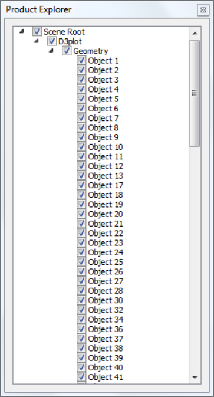
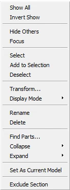
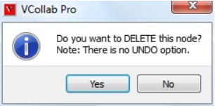

Product Explorer¶
Product Explorer explores the knowledge on product model through hierarchical set up of all nodes.
Location
Product Explorer can be found in ‘Widgets’ items in the right click viewer context menu. It contains four tabs for Scene Tree, Viewpoints,Results, Hotspot Finder and XYPlot.


Context Menu

Show All |
Shows all parts independent of selection. |
||||||||||||||||
Invert Show |
Hides visible parts and Shows invisible parts |
||||||||||||||||
Hide others |
Hides all parts except current selection |
||||||||||||||||
Focus |
Focus on the selected part or group. |
||||||||||||||||
Select |
Selects the part by highlighting its bounding box |
||||||||||||||||
Add to Selection |
Adds to the selection list by highlighting parts bounding box |
||||||||||||||||
Deselect |
Deselects current selection |
||||||||||||||||
Transform |
Allows user to apply any transformation to the group node. Not applicable for leaf node or individual part. |
||||||||||||||||
Display Mode |
Applies one of the following display modes to the current selection.
|
||||||||||||||||
Find Parts |
Pops up Find Parts dialog for multiple operations on selection of parts. |
||||||||||||||||
Collapse |
Allows user to collapse the tree into multiple levels.(All/ Level 1/ Level 2/ Level 3) |
||||||||||||||||
Expand |
Allows user to expand the tree into multiple levels. (All/ Level 1/ Level 2/ Level 3) |
||||||||||||||||
Set As Current Model |
Sets the selected root node as current model. |
||||||||||||||||
Exclude Section |
Allows user to exclude the selected parts from cut-section. |
How to Hide/Show a part?
User can hide/show the part in multiple ways.
One of them is to check or uncheck the scene tree items to show or hide respectively.
User can use double click context menu option to show / hide the parts.
Scene tree panel context menu can be used for further part visibility operations.
How to Select or highlight a part?
Select a part or part component in product tree.
Click the right mouse button
It drops down a menu.
Click ‘Select’ option
The part will be highlighted with bounding box for the part.
Click other parts and add them to highlight using ‘Add to selection’ in context menu.
Use ‘Deselect’ option to remove the selection of parts.
How to focus a part among groups?
Select a part in viewer.
Right click and select ‘Focus’ option to fit the part to the viewer window.
How to delete a part or group of parts?
User can delete a part or group of parts using product explorer context menu.
Select a part node or group node in product tree by clicking on the node.
Click the node using mouse right button.
It drops down the context menu.
Select ‘Delete’ option.
It pops up a message dialog box as below.

Click ‘Yes’ to assure deletion or ‘No’ to cancel deletion.
The part or group of parts will be deleted from the scene and product tree, if ‘Yes’ is clicked.
User can delete a part but not group of parts using viewer double click context menu
Select a part by double clicking with mouse left button on the part of interest.
It drops down a context menu.
Select ‘Delete’ option
It pops up a message dialog box as below.
Click ‘Yes’ to assure deletion or ‘No’ to cancel deletion.
The part will be deleted from the scene and product tree, if ‘Yes’ is clicked.
User can save the remaining parts into cax. In other words, deleted parts can not be saved in cax.
How to exclude parts from cut section clipping?
Load a cax file
Switch on section plane.
Click a part name in product explore, which is clipped by section plane.
Open context menu using right mouse click inside product explorer panel.
Click ‘Exclude Section’
The selected part is visible now and not clipped by section plane.
Repeat the step for other required parts.
Click or uncheck the option ‘Exclude Section’ again to include the part again.
Note
To exclude or include, this function is applied for only one selected part in the product explorer.